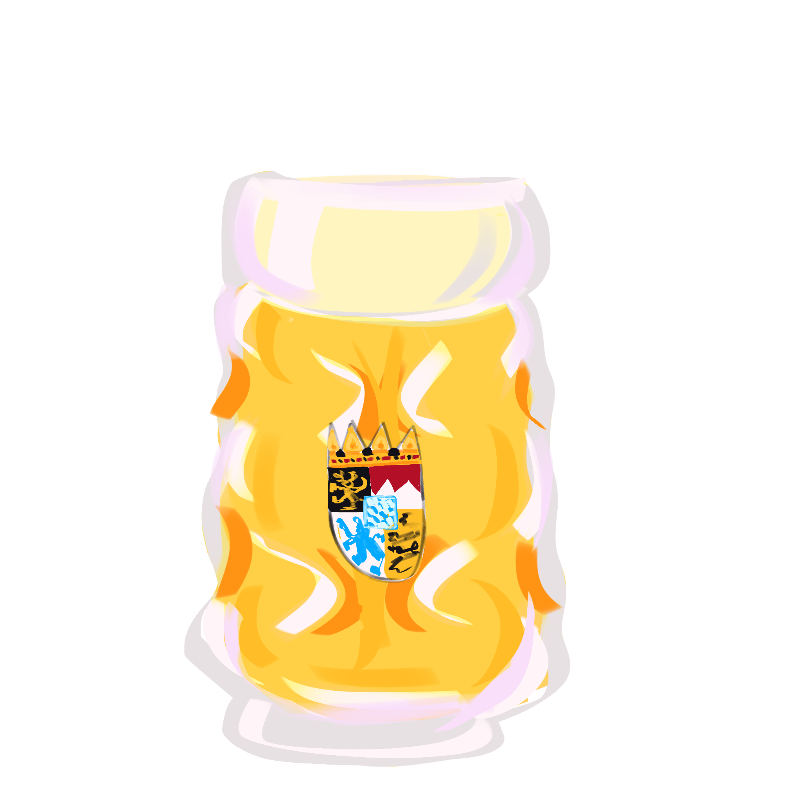

La Tomatina in Buñol, Spain—what started as a spontaneous food fight in 1945 has become an annual phenomenon where thousands of visitors from across the globe gather each August to hurl overripe tomatoes at each other in the streets, united in joyful chaos. The festival maintains its Spanish roots while opening its arms to anyone willing to embrace the messy fun.
Carnival, celebrated in various forms worldwide but perhaps most famously in Rio de Janeiro and Venice, showcases how communities honor their heritage through elaborate costumes, music, and dance while inviting international spectators to join the revelry. Whether you're Brazilian or not, donning a feathered costume and dancing in the streets creates an instant connection to the culture's spirit of celebration and freedom.
Holi, the Hindu festival of colors marking spring's arrival, has transcended its religious origins to become a worldwide celebration of joy and renewal. People of all backgrounds now participate in color-throwing festivities from New Delhi to New York, experiencing the Indian value of unity and the triumph of good over evil through vibrant gulal powder and communal celebration.

Oktoberfest in Munich demonstrates how a regional Bavarian tradition—originally a royal wedding celebration—can evolve into the world's largest folk festival. Visitors from every continent come to experience German hospitality, raise steins of beer, and enjoy traditional music and food, creating a temporary global village centered on Bavarian culture.